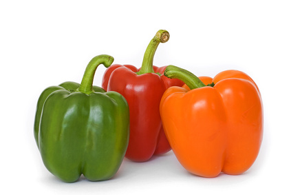

Greenhouse Sweet and Hot Peppers (Capsicum annuum)

Mating & Breeding System: Cultivars of this plant include both sweet peppers and many varieties of hot peppers, all originating from Latin America. This information is largely limited to sweet bell peppers, since production of hot peppers in Ontario rarely reaches a commercial scale beyond local markets. However, much of the information still applies to hot pepper varieties. Hot pepper growers who prefer controlled cross-breeding should take steps to prevent open pollination.
Pepper flowers are self-fertile, and most flowers can set fruit without cross-pollination. Even so, peppers still produce both pollen and nectar. The style is generally longer than the surrounding stamens, and the stigma is usually receptive prior to the release of pollen.
Like many members of the Solanaceae plant family, peppers require physical agitation by wind or “buzz pollinators” to release pollen from porous anthers.
Pollination, Quality & Yield: Although it is known that fruit set and yield are related to the bearing capability of the plant, researchers in different parts of the world (including Ontario) have found significant increases in fruit weight, fruit size, and seed number in greenhouse-grown hot peppers pollinated by bumble bees. Interestingly, similar improvements were found with the drone fly Eristalis tenax (Syrphidae), even though the fly does not buzz-pollinate.
Pollination Recommendations: In windless greenhouses, insect activity is generally required to facilitate both self- and cross-pollination in pepper crops. While it is possible to use honey bees in greenhouses, they do not like the still air and tend to try to escape to forage outside. In addition, honey bees are not capable of buzz pollination.
Commercial availability of bumblebees (Bombus impatiens), which are excellent buzz-pollinators, is now fully established in Ontario. A single hive of bumble bees can pollinate 3000 square meters of greenhouse sweet peppers.
References
Dag, A. & Kammer, Y. 2001. Comparison between the effectiveness of honey bee (Apis mellifera) and bumble bee (Bombus terrestris) as pollinators of greenhouse sweet pepper (Capsicum annuum). American Bee Journal 141:447-448.
Ercan, N. & Onus, A.N. 2003. The effects of bumblebees (Bombus terrestris L.) on fruit quality and yield of pepper (Capsicum annuum L.) grown in an unheated greenhouse. Israel Journal of Plant Sciences 51:275-283.
Free, J.B. 1993. Insect Pollination of Crops, 2nd edition. Academic Press.
Jarlan, A., de Oliveira, D., & Gingras, J. 1997. Pollination by Eristalis tenax (Diptera: Syrphidae) and seed set of greenhouse sweet pepper. Journal of Economic Entomology 90:1646-1649.
Kevan, P.G., Straver, W.A., Offer, M., & Laverty, T.M. 1991. Pollination of greenhouse tomatoes by bumble bees in Ontario. Proceedings of the Entomological Society of Ontario 122:15-19.
Kwon, Y.J. & Saeed, S. 2003. Effect of temperature on the foraging activity of Bombus terrestris L. (Hymenoptera: Apidae) on greenhouse hot pepper (Capsicum annuum L.). Applied Entomology and Zoology 38:275-280.
Morandin, L.A., Laverty, T.M., & Kevan, P.G. 2001. Bumble bee (Hymenoptera: Apidae) activity and pollination levels in commercial tomato greenhouses. Journal of Economic Entomology 94:462-467.
Raw, A. 2000. Foraging behaviour of wild bees at hot pepper flowers (Capsicum annuum) and its possible influence on cross pollination. Annals of Botany 85:487-492.
Serrano, A.R. & Guerra-Sanz, J.M. 2006. Quality fruit improvement in sweet pepper culture by bumblebee pollination.Scientia Horticulturae 100:160-166.